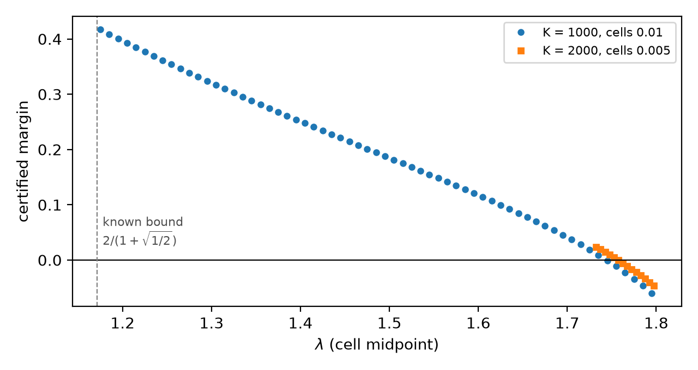

Reduction lemmas and an exact-integer cell certificate on [1.17,1.755] are formalized in Lean 4 with mathlib, checked by kernel reduction without native_decide.
Abstract
The speed $v(λ)$ of the $λ$-biased random walk on a supercritical Galton–Watson tree without leaves is conjectured to be nonincreasing on $[0,m)$, where $m$ is the mean offspring. For non-constant offspring, monotonicity is known only for small bias: $λ\le 1/1160$, $λ\le 1/2$, and, when every vertex has at least $m_1\ge 2$ children, $λ\le m_1/(1+\sqrt{1-1/m_1})$. For offspring uniform on $\{2,3\}$ ($m=2.5$) the last bound is $2/(1+\sqrt{1/2})\approx1.1716$. We prove, with computer assistance, that $v$ is strictly decreasing on $[0,1.755]$ for this law. The proof has three parts. Aïdékon's speed formula gives $v=(R-λ)/(R+λ)$ for an explicit functional $R$, so $v$ decreases exactly when $R/λ$ does; we compare $R/λ$ at two biases directly, which avoids differentiating the conductance. A pathwise Lipschitz bound on the conductance in $λ$ turns that comparison into an inequality between expectations of explicit functions. A monotone sandwich of discretised laws gives two-sided bounds on the conductance law, and each $λ$-cell is checked in exact rational arithmetic over bounded floating-point error, with five cells re-checked in interval arithmetic; all reduction lemmas and an exact-integer certificate across $[1.17,1.755]$ are also formally verified in Lean 4. The method stops where the crude Lipschitz bound becomes too weak; sharper control of the derivative of the conductance is what the full range needs. Code and certificates are public.
Problem
The speed of the λ-biased random walk on a leafless Galton–Watson tree is conjectured to be nonincreasing in λ. For non-constant offspring, monotonicity was known only for small bias. For offspring uniform on {2,3}, the best known bound was λ ≤ 1.17157.
Approach
Aïdékon's speed formula reduces monotonicity to comparing R/λ at two biases. A pathwise Lipschitz bound on the conductance turns that comparison into an inequality between expectations of explicit functions. Stochastic-order envelopes of discretised conductance laws bound these expectations, and each λ-cell is checked in exact rational arithmetic, with an independent interval-arithmetic check. The reduction lemmas and an exact-integer certificate over 34 cells are formalized in Lean 4/mathlib and discharged by kernel reduction. Aïdékon's formula and the prior small-bias theorem are taken as hypotheses.
Results
The speed is strictly decreasing on [0,1.755] for offspring uniform on {2,3}, extending the known range beyond 1.17157. Cells fail near 1.74–1.76 because the crude Lipschitz bound becomes too weak there.

Figure 1: Certified margin per cell: the right side minus the left side of ( 6 ), plotted at each cell’s midpoint. A positive margin certifies the cell. The dashed line marks the bound of Song et al. (2025) .
Cell
K
Margin
Certified
[1.17,1.18]
1000
0.41711
yes
[1.60,1.61]
1000
0.11398
yes
[1.74,1.75]
1000
-0.00085
no
[1.750,1.755]
2000
0.00476
yes
[1.755,1.760]
2000
-0.00032
no
Selected certified cells (margin = RHS minus LHS of inequality (6))